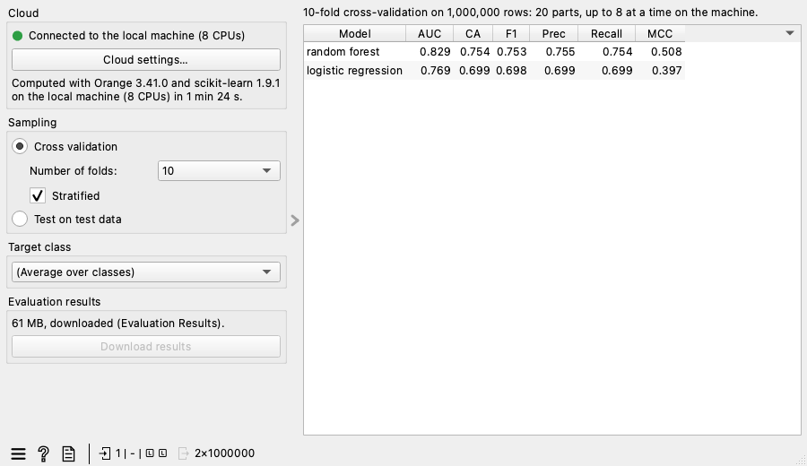

Cross-validates learners, or tests them on test data, in parallel on the machine, with scores computed on all rows.

Like every Cloud widget, it has a Cloud box at the top: whether a machine is connected, Cloud settings… and Stop machine, and what the last job ran with, how long it took and what it cost. See Cloud widgets.
The scores table is Orange's (right-click its header to choose the scores). Each learner and fold is a separate part of the job, and the parts run side by side as far as the machine's cores and memory allow; the line above the table says how many ran at a time. A learner that fails is marked "(error)".
The results hold a prediction for every row and learner and are kept on the machine. Results of up to 100 MB are downloaded at once. Larger results (about 0.7 GB for two learners on 11 million rows) wait for Download results, which shows their size and asks first. The download shows its progress, can be cancelled, and continues where it stopped if the connection breaks.
The data stays on the machine, so the results' data has only the target column. Confusion Matrix works, but the rows it outputs have only that column.